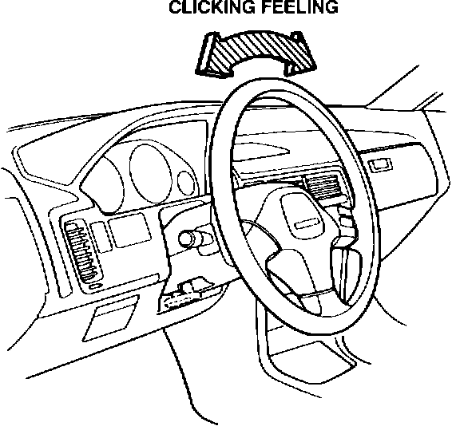
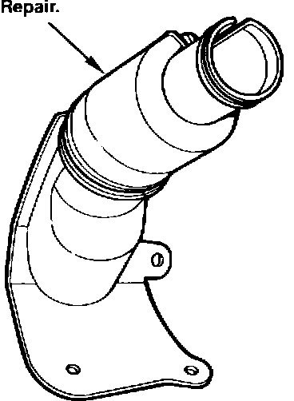

Steering Shaft

Steering Shaft Clicks
Symptom: Clicks heard or felt from the steering shaft when the wheel is turned at very slow speeds or while parking.
Source: Friction between the steering shaft joint cover and the steering shaft.

Corrective Action: Roll back the carpet on the driver's side, remove the steering shaft joint cover (P/N 53320-SK7-A00). Using a hair dryer, melt out any irregularities or deformities in the steering shaft cover that could make contact with the steering shaft. If the irregularities cannot be corrected, replace the cover.
WARRANTY CLAIM INFORMATION
Operation number: 510080 - Repair
510180 - Replace
Flat rate time: 0.5 hours
Failed P/N: 53320-SK7-A00
Defect code: 042
Contention code: B07